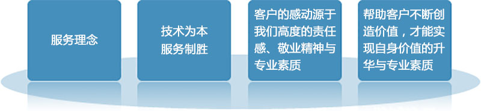

您的位置: 首页 > 服务项目 > 软件外包服务
恒拓开源一直致力于提供最优秀的外包服务。古树互联本着“不断追求完美”的做事风格，在众多项目实践过程中不断探索与优化项目管理流程建设。古树互联开发团队已形成自己一套独特的项目开发模式。这套模式有效地解决了项目开发过程中的管理和控制难点。如：公司在软件需求管理、软件质量管理、项目进度管理等方面均走在同行前列。在众多项目的实践过程中，此模式得以健全和验证，保证了优质的软件产品交付给客户。
恒拓开源拥有优秀的设计、开发、测试、部署、管理和维护技术服务能力。基于优异的项目管理、流程、工作方法和工具，我们为客户提供安全高品质的软件外包服务。具体包括：应用软件开发、维护、管理、遗留系统再工程、遗留系统移植、主机系统升级与移植服务。